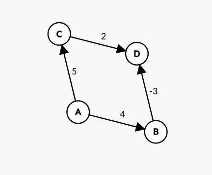
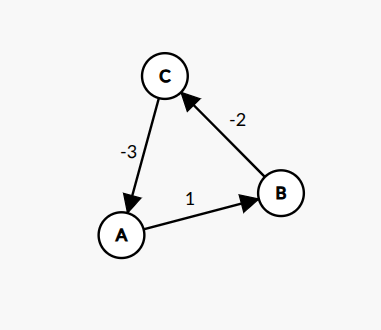

Bellman-Ford Algorithm for Single Source Shortest Path
1. Introduction
The Bellman–Ford algorithm is a single-source shortest path algorithm used to find the minimum distance from a given source vertex to all other vertices in a weighted graph. Unlike Dijkstra's algorithm, Bellman–Ford can handle graphs with negative edge weights and is also capable of detecting negative weight cycles.
The algorithm works by repeatedly relaxing all edges of the graph. After V-1 iterations, the shortest distances are guaranteed to be found if no negative weight cycle exists.
1.1 Notation Table
| Symbol | Meaning |
|---|---|
| G(V, E) | Graph with vertices V and edges E |
| V | Set of vertices |
| E | Set of edges |
| S | Source vertex |
| u, v | Vertices in the graph |
| w | Weight of an edge |
| dist[v] | Current shortest distance to vertex v |
2. Problem Definition
Given:
- A directed graph G(V, E)
- A source vertex S
- Edge weights that may be positive, zero, or negative
Important: For an undirected graph with a negative-weight edge, Bellman-Ford is not applicable for shortest paths because that edge can be traversed in both directions, creating a negative cycle of length 2.
Find:
- The shortest distance from S to every other vertex
- Detect if a negative weight cycle is present
3. Key Idea
The algorithm is based on edge relaxation:
For an edge
(u → v)with weightw:If
dist[u] + w < dist[v], then updatedist[v] = dist[u] + w
The algorithm relaxes all edges V-1 times because:
- After 1 iteration: shortest paths with at most 1 edge are found
- After k iterations: shortest paths with at most k edges are found
- After V-1 iterations: all shortest paths are found
4. Algorithm Steps
- Initialize distance of all vertices as ∞, source as 0
- Repeat (V − 1) times: For every edge
(u → v), ifdist[u] + w < dist[v], updatedist[v] - Check for negative cycles: If any edge can still be relaxed, negative cycle exists
5. Why (V − 1) Iterations?
The longest possible shortest path in a graph with V vertices can have at most V − 1 edges. After V-1 iterations, all shortest paths are guaranteed to be found.
6. Pseudocode
BellmanFord(Graph, V, E, source):
// Initialize
for each vertex v in V:
dist[v] ← ∞
predecessor[v] ← NULL
dist[source] ← 0
// Relax edges V-1 times
for i = 1 to V - 1:
for each edge (u, v, w) in E:
if dist[u] ≠ ∞ and dist[u] + w < dist[v]:
dist[v] ← dist[u] + w
predecessor[v] ← u
// Check for negative cycles
for each edge (u, v, w) in E:
if dist[u] ≠ ∞ and dist[u] + w < dist[v]:
return "Negative cycle detected"
return dist
7. Example
7.1 Graph Setup

Graph Properties:
- Vertices (V): {A, B, C, D} → |V| = 4
- Edges (E): {A→B, A→C, B→D, C→D} → |E| = 4
- Source vertex: A
Edge List with Weights:
| Edge | Weight | Description |
|---|---|---|
| A → B | 4 | Positive edge |
| A → C | 5 | Positive edge |
| B → D | -3 | Negative edge |
| C → D | 2 | Positive edge |
Note: This graph contains a negative edge weight (B→D = -3), which is why we use Bellman-Ford instead of Dijkstra.
7.2 Step-by-Step Execution
Initialization
Set distance of source to 0, all others to ∞:
| Vertex | dist[] | predecessor[] |
|---|---|---|
| A | 0 | NULL |
| B | ∞ | NULL |
| C | ∞ | NULL |
| D | ∞ | NULL |
Number of iterations required: V - 1 = 4 - 1 = 3 iterations
Iteration 1
Relax all edges:
| Edge | Condition | Action | Updated dist[] |
|---|---|---|---|
| A → B | dist[A] + 4 < dist[B] → 0 + 4 < ∞ | Update: dist[B] = 4, pred[B] = A | dist[B] = 4 |
| A → C | dist[A] + 5 < dist[C] → 0 + 5 < ∞ | Update: dist[C] = 5, pred[C] = A | dist[C] = 5 |
| B → D | dist[B] + (-3) < dist[D] → 4 - 3 < ∞ | Update: dist[D] = 1, pred[D] = B | dist[D] = 1 |
| C → D | dist[C] + 2 < dist[D] → 5 + 2 < 1 | No update (7 > 1) | dist[D] = 1 |
State after Iteration 1:
| Vertex | dist[] | predecessor[] |
|---|---|---|
| A | 0 | NULL |
| B | 4 | A |
| C | 5 | A |
| D | 1 | B |
Iteration 2
Relax all edges again:
| Edge | Condition | Action |
|---|---|---|
| A → B | 0 + 4 < 4 → 4 < 4 | No update (4 = 4) |
| A → C | 0 + 5 < 5 → 5 < 5 | No update (5 = 5) |
| B → D | 4 + (-3) < 1 → 1 < 1 | No update (1 = 1) |
| C → D | 5 + 2 < 1 → 7 < 1 | No update (7 > 1) |
No changes in Iteration 2 — distances have converged.
Iteration 3
Relax all edges again:
| Edge | Condition | Action |
|---|---|---|
| A → B | 4 < 4 | No update |
| A → C | 5 < 5 | No update |
| B → D | 1 < 1 | No update |
| C → D | 7 < 1 | No update |
No changes in Iteration 3 — algorithm complete.
Negative Cycle Check
After V-1 iterations, check if any edge can still be relaxed:
| Edge | Condition | Result |
|---|---|---|
| A → B | 0 + 4 < 4? | No |
| A → C | 0 + 5 < 5? | No |
| B → D | 4 + (-3) < 1? | No |
| C → D | 5 + 2 < 1? | No |
No negative cycle detected — shortest paths are valid!
7.3 Final Result
| Vertex | Shortest Distance | Shortest Path | Edges in Path |
|---|---|---|---|
| A | 0 | A | 0 |
| B | 4 | A → B | 1 |
| C | 5 | A → C | 1 |
| D | 1 | A → B → D | 2 |
Path Reconstruction:
- A to D: Follow predecessors: D ← B ← A → Path: A → B → D (cost: 4 + (-3) = 1)
- A to B: Follow predecessors: B ← A → Path: A → B (cost: 4)
- A to C: Follow predecessors: C ← A → Path: A → C (cost: 5)
7.4 Visualization Summary
Iteration 0 (Initial): A=0, B=∞, C=∞, D=∞
Iteration 1: A=0, B=4, C=5, D=1
Iteration 2: A=0, B=4, C=5, D=1 (no change)
Iteration 3: A=0, B=4, C=5, D=1 (no change)
Final shortest paths from A:
A ──(0)──> A
A ──(4)──> B
A ──(5)──> C
A ──(1)──> D (via B, using negative edge!)
8. Negative Weight Cycle Detection
A negative weight cycle is a cycle with total negative weight. If it exists, shortest paths are undefined.
Detection: After V-1 iterations, if any edge can still be relaxed, a negative cycle exists.
Example:
A → B → C → A with weights 1, -2, -3
Total: 1 + (-2) + (-3) = -4 (negative cycle!)
9. Time and Space Complexity
| Metric | Complexity |
|---|---|
| Time | O(V × E) |
| Space | O(V) |
10. Advantages
- Works with negative edge weights
- Detects negative weight cycles
- Simple implementation
- Guarantees correct shortest paths
- Can reconstruct paths using predecessor array
11. Disadvantages
- Slower than Dijkstra (O(V×E) vs O(E log V))
- Inefficient for large dense graphs
- Basic version runs V-1 iterations; optimized implementations can terminate early if an iteration makes no updates
- Not suitable for real-time applications
12. Applications
- Network Routing: RIP protocol uses Bellman-Ford
- Currency Arbitrage: Detecting profitable exchange cycles
- Traffic Networks: Finding shortest routes with penalties
- Game Theory: Computing optimal strategies
- Resource Allocation: Optimizing costs with benefits
- Constraint Satisfaction: Solving temporal constraints
13. Comparison with Dijkstra's Algorithm
13.1 Feature Comparison
| Feature | Bellman–Ford | Dijkstra |
|---|---|---|
| Negative edge weights | Yes | No |
| Negative cycle detection | Yes | No |
| Time complexity | O(V × E) | O(E log V) |
| Space complexity | O(V) auxiliary (or O(V + E) including graph storage) | O(V + E) (binary heap + adjacency list) |
| Approach | Dynamic Programming | Greedy |
| Data structure | Simple arrays | Priority Queue (Heap) |
| Edge processing | All edges, V-1 times | Adjacent edges only |
| Early termination | Not in basic version (yes with no-update optimization) | Yes (when target found) |
| Best for | Negative weights, cycle detection | Non-negative weights, speed |
13.2 When to Use Which Algorithm?
Use Bellman-Ford when:
- Graph contains negative edge weights
- Need to detect negative weight cycles
- Graph is relatively sparse
- Correctness is more important than speed
- Working with financial/currency exchange problems
Use Dijkstra when:
- All edge weights are non-negative
- Need faster execution for large graphs
- Working with road networks, GPS navigation
- Graph is dense with many edges
- Real-time performance is required
13.3 Try Dijkstra's Algorithm
To better understand the differences, try the Dijkstra's Algorithm simulation on Virtual Labs:
🔗 Dijkstra's Algorithm - Virtual Lab Simulation
This interactive simulation allows you to:
- Visualize step-by-step execution of Dijkstra's algorithm
- Compare how it differs from Bellman-Ford
- Understand why Dijkstra fails with negative weights
14. Why Shortest Paths Are Undefined with Negative Cycles
If a graph contains a negative weight cycle, shortest paths become undefined because you can keep traversing the cycle to reduce the path cost indefinitely. Bellman-Ford successfully detects such cycles but cannot compute shortest paths when they exist.
Example of a Negative Cycle

Edge weights:
- A → B: 1
- B → C: -2
- C → A: -3
Total cycle weight: 1 + (-2) + (-3) = -4 (negative)
Explanation: Every time the algorithm goes around this cycle, the total path cost decreases by 4. This means there is no well-defined shortest path, as you can keep looping and getting a lower cost.
Bellman-Ford's behavior:
- After V-1 iterations, the algorithm checks for further relaxations. If any edge can still be relaxed, a negative cycle exists.
- In this case, the algorithm will detect the negative cycle and report it, rather than returning shortest paths.
15. Conclusion
The Bellman–Ford algorithm is essential for graphs with negative edge weights and negative cycle detection. While slower than Dijkstra's algorithm, its ability to handle negative weights makes it indispensable in network routing, financial modeling, and constraint-based optimization.